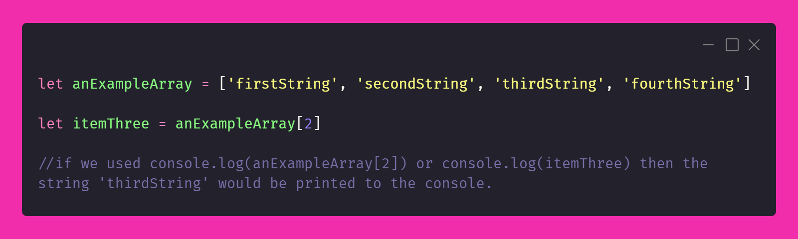

tech blog 2: JavaScript and the DOM
introduction to what JavaScript is and
how to interact with objects using the
DOM.
happy fam: HTML, CSS and JavaScript
Harry The Mad Lion, Clara So Stylish and Jamie-St-Claire are siblings
who want to share engaging ideas with the world. They are confident in
their mission, but know that in order to be successful, they must
combine their individual skills together.
Each sibling has different strengths, and is particularly good at doing
what they do, but Harry and Clara are particularly single-minded, so
while they each excel in their particular skill and work well with one
another, Jamie is the one who really gets things going when it comes to
engaging with a community outside of the family.
The oldest of the siblings, Harry is a stalwart intellectual - hard
thinker, hard worker and for some strange reason loved to play tag a
little too much as a child. While, as a skilled wordsmith, he excels at
generating content, explaining concepts, and gathering images and
resources together, he tends to think that presentation skills are all a
bit fluffy and useless.
Content is Harry's game.
As a second child, Clara appreciates Harry and is inspired by all his
amazing ideas. Knowing that for others, these ideas might come across a
little dry as presented by Harry, she has become a skilled artist,
presenting his ideas to the world packaged up with wonderful style,
expression and flair. She allows the world to engage with Harry’s ideas
visually, without the hard work needed to engage with Harry directly.
Presentation is the word-of-the-day for Clara.
Jamie-St-Claire is the motivator, the doer, the activator of the family.
Interaction, and dynamic engagement with ideas, really turns them on.
Jamie sees the potential for engagement with Harry’s ideas beyond what
Clara could ever imagine. Jamie connects people to Harry's ideas, and
Clara’s presentation of those ideas, in a way that allows those ideas to
come to life, to shift and change, right in the moment of interaction.
Active engagement is Jamie’s middle name (not literally… we all know
their middle name is St, duh).
Combining their skills, Harry The Mad Lion, Clara So Stylish and
Jamie-St-Claire engage the world with beautifully presented ideas and
allow people to interactively engage with them. In the same way,
HTML,
CSS and
JavaScript create beautiful websites, so
that people can connect with ideas, systems or products in an engaging
and easeful way. Like Harry,
HTML provides the content; like Clara,
CSS provides the styling; and, like
Jamie-St-Claire, JavaScript provides real
time interactivity between users and web content.
control flow and loops
Computers can do amazing things. But really, they are a bit simple. In
order for us humans to talk to computers, we need to be super clear, and
follow very precise syntax in order for the computer to understand the
instructions we give it.
One element of how a computer understands our instructions is by using
the concept of control flow. We can think of the control flow like
baking a warm loaf of bread, following a specific recipe. We have an
ordered number of steps, which we follow from one to another. First, we
do step 1, then step 2, and so forth. We add three cups of flour, two
teaspoons of yeast, perhaps some salt and warm water. But what happens
when we get to the step where we leave the bread to rise?
The recipe may say something like “Leave the dough in a warm place
either for an hour, or until the dough doubles in size.” This is a kind
of condition, or test, that the dough must pass, before we are allowed
to move on to the next step of the recipe. Once the bread fulfils one or
other of the conditions (maybe in forty minutes it doubles in size, or
after an hour it hasn’t but our timer goes off) then we can move on, and
continue the rest of the recipe.
We may also have another condition when it comes to baking the bread. It
may say “Once the bread is golden brown, remove and place on a cooling
rack.” In a program we use loops to execute steps that require checking
a condition. We can place a condition at the start or end of our loops
which allow us to stop repeating the steps within the loops once the
condition is met. Going back to our analogy, we can stop checking if the
dough has risen once it has doubled in size. That is, the condition that
‘the bread is doubled in size’ is true.
Another example of using control flow is using if/else statements. These
statements are like a forked path, where a condition being met means we
take the left fork, and it’s not being met means that we take the right
fork. In our bread example it might be something like:

the DOM
The DOM is an acronym for the document object model, and creates a way
for people to interact with the content and styling of websites in real
time, usually with the help of a middle man programming language such as
JavaScript.
In the DOM, each element of a webpage is modelled as an object (which is
a node in a tree hierarchy).
As you can see, the structure of our html code already looks somewhat
like a tree because of the stylistic indentation we use when we write
it. We can think of the left-most elements as the oldest ancestors of
the family and the rightmost elements as the newest additions. A child
element sits inside its parent element, so as you can see, our two
paragraph objects will be children of our body object. It can be clearer
to represent our DOM in a tree diagram, as follows.
When we look at our html file in the browser, we have a window object,
and within that is a document object, which contains all of our html.
This document object is the object we will refer to the most as our most
general ancestor - all other elements are descendents of the document.
interactions in the DOM
HTML creates the content of a website, with some basic syntactic
properties. Using CSS this content can be styled for aesthetics and
usability. However, using only HTML and CSS is limiting, as the websites
that we create, while perhaps containing animations or embedded videos,
will remain static as we interact with them.
In order to make our websites interactive, engaging and useful, we can
use JavaScript to add interactivity to our HTML and CSS, that helps
events to happen as triggered by the user, without having to refresh a
page. For example, we might like a "Success!" message to appear and a
set of input boxes to disappear when a user submits information.
The DOM provides objects modelled from HTML and CSS elements that
Javascript (an object-oriented language) can easily interact with. For
example, using JavaScript, we might search through our HTML for a button
and change the styling, or cause something to happen when a user clicks
on the button.
The way this works is usually by referencing an HTML element using an
ID, class or type. By declaring a variable and calling an appropriate
method, we can get a collection of objects or a single object, and then
interact with that object, in order to tell it to behave a particular
way. For example, if the element is a button we could add an event
listener that would cause a particular action to happen when the button
is clicked.
Java connects to our HTML elements through the use of a script tag
within our HTML document, which references our JavaScript document.
.png)
accessing data: arrays & objects
Arrays and objects are both abstract data types, which means they are
like imaginary containers that we store information inside in order to
keep it organised.
To access items in an array there is an indexing system from 0 to the
length of the array minus one. Each item in the array has a positional
index which can be referred to. For example, the third item in the list
will be at index 2 and can be retrieved from the list and assigned to a
variable (or manipulated in some other way) as shown below.

To access values from an object we can use their associated key. Objects
are made up of comma-separated key-value pairs. Like in an array, the
key can be used like an index as seen with secondValue1. Otherwise, dot
notation may be used, as demonstrated with secondValue2.
functions: what and why?
Functions are bits of code that a) do stuff and b) can be used to do the
same stuff again. Functions save time because repeatable tasks can be
packed up into a single keyword, which saves us repeating all the steps
of a task over and over again. We can hand input to functions (if we
want), do operations on the input (if we want), do some other random
stuff (if we want) and get output back from the function (if we want).
.png)
Thank goodness for functions.